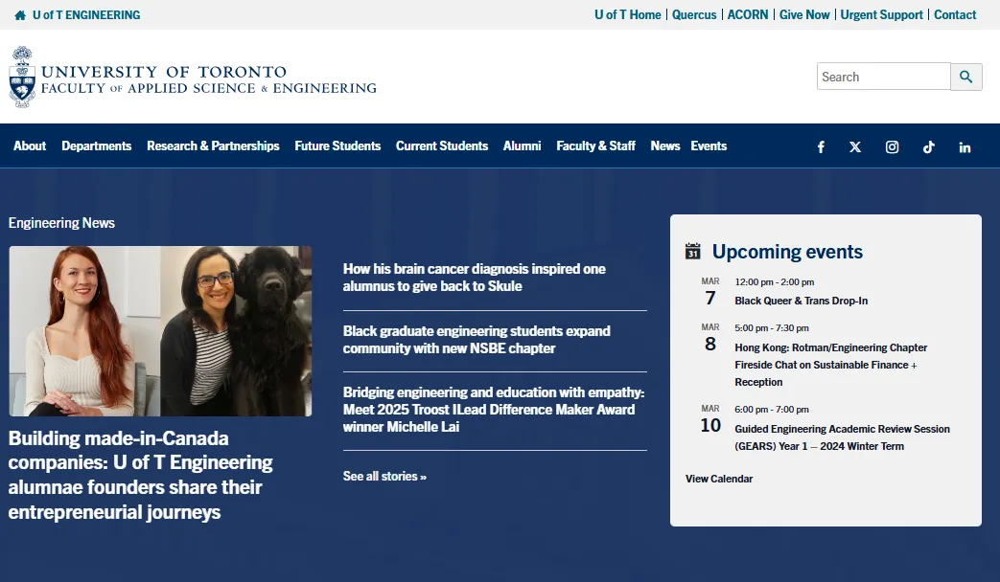
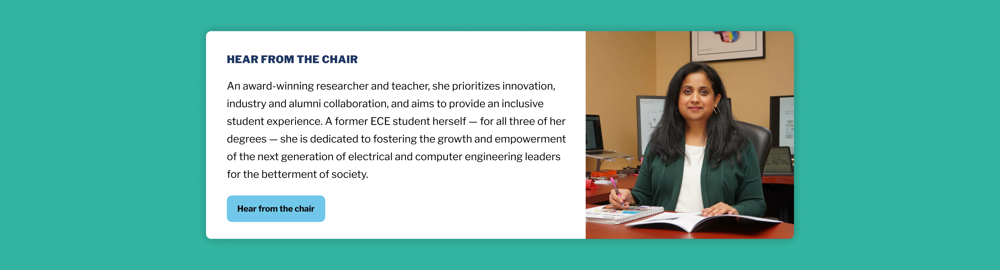
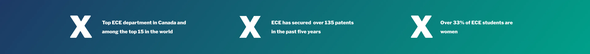
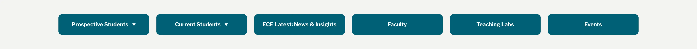
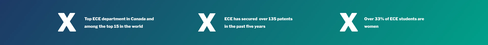
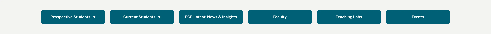
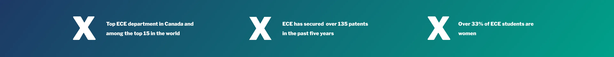
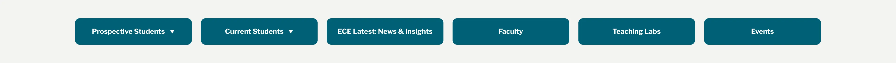

Project Goals
Prospective students have questions. However, answers aren't always easy to find.
At the same time, We had a strong story to tell: one of innovation, opportunity, and research excellence.
It wasn’t a lack of content.
That’s when it became clear: This wasn’t just a redesign.
It was a chance to reframe how the department welcomed future students.
This project aimed to transform the University of Toronto’s Electrical & Computer Engineering (ECE) department homepage into a compelling, student-focused digital experience.
Traditional Academic Websites
Well-intentioned, Content-rich
but often hard to navigate
1 Help Recruit Prospective Students
2 Be an Access Portal
3 Be Representative
Challenges
Surface Key Gaps in the Existing Page
Outdated visuals, vague research info, no co-op details, and low event visibility.
Design for Visual Clarity and Action
Text-heavy layout with few visual cues or CTAs to guide users.
Align with U of T’s Brand Standards
Inconsistent application of U of T guidelines compared to other FASE departments.
Design process
The solution wasn’t simply improving layout or updating visuals; it was about fundamentally rethinking the homepage’s structure.
We had to enhance Clarity and Visual Hierarchy.
This meant starting with
a comprehensive design audit and competitive research
to pinpoint gaps and identify best practices.
From there, wireframes and mockups
were created to establish a new direction.
Core Design Deliverables & Activities
Step 1: UX/UI Design
Tasks such as Design Audit, Competitor research, Wireframes, and High-fidelity Mockups.
Brainstorming & Ideation
To Explore multiple layouts + UI ideas and visualize the redesign direction.
Research
To Benchmark functionality and appeal.
Wireframes & Mockups
Create high-fidelity designs and visual mockups using Figma.
Step 2: Website Development
Tasks such as Developing using WordPress + Apply UI Element Animations, and Check Responsiveness.
Website Building
Designing/Developing the Webpage on the CMS.
Interaction Design
Animating the sections.
Design Audit
| Design Elements | Purpose of Element | Already Exists? | Redesign Needed? | Narrative Order |
|---|---|---|---|---|
| Hero Banner | Draw in People | Yes, not student-focused | Yes | 1 |
| Interactive Banner | Jobs & Events | Exists, but inactive | No | 2 |
| Quick Links | Navigate site | Exists, poorly styled | Yes | 3 |
| Important Facts | Why join ECE | No, outdated content | Yes | 4 |
| Programs of Study | Highlight offerings | Yes, 2020–21 content | Yes | 5 |
| Chair’s Message / Events | Welcome & Events | Chair exists, not Events | Yes | 6 |
| Other Highlights | Research & Co-op | Research links exist | Yes | 7 |
Existing Hero Banner Practices



UI Element Ideation

.webp) 






Website Development
With feedback from internal teams, the approved mockups were implemented directly into WordPress—translating design into a responsive, student-focused homepage.
We built a homepage that informs, invites, and reflects the department.
Key updates included a
prominent hero banner
featuring the department slogan and ECE experience.
Important content like facts, programs, and events were
restructured for clarity,
with bold headings and visual emphasis.
A new
events section
was introduced, and research & industry opportunities were spotlighted with clear calls to action.
Requirements for a Meaningful Redesign
Student-Centric, Visually Clear
and aligned with brand standards
1 Surface Key Gaps in the Existing Page
Outdated visuals, vague research info, no co-op details, low event visibility
2 Design for Visual Clarity and Action
Reduce cognitive load, increase CTA visibility, improve layout hierarchy
3 Align with U of T’s Brand Standards
Correct inconsistent styling compared to other FASE departments
Final Outcome
Up-to-date and Modular
Customizable and campaign-ready by design
1 Helps Recruit Prospective Students
Provides information and links to aid student decision-making
2 Functions as an Access Portal
Showcases strengths, programs, and opportunities clearly
3 Represents the Department
Accurately reflects identity, values, and tone
Takeaways
The goal of this project was to redesign the home page to serve as a tool for recruitment of prospective students and represent the ECE Department. By structuring accurate content effectively and incorporating authentic images of the department, I designed the website's homepage on WordPress. It was very important to ensure it served these requirements as it a part of the Faculty of Applied Science & Engineering at the University of Toronto. They need to attract as well as be consistent across the Faculty. There were strict guidelines and conventions to follow; this website would be used by students, professors, university staff, as well as Industry Partners throughout Toronto and Canada.
Key Takeaway: Stakeholder Perspectives
This project taught me to advocate for design and understand a wide range of stakeholders, including the different staff members in the department, the wider Engineering Faculty, as well as the needs and demands of the students we wished to recruit, and the Professors and Researchers who work at the Department.